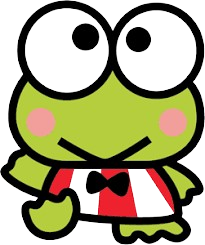
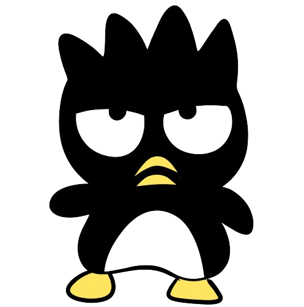
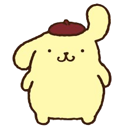
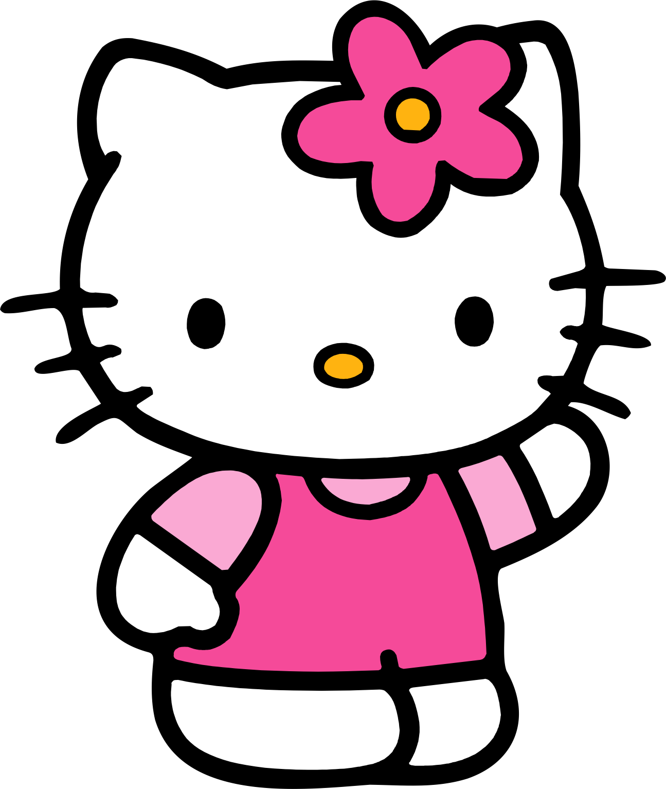

| Keroppi | Como una rana verde vibrante y llena de energía, Keroppi es el maestro de los entornos acuáticos en "Hello Kitty Racing". Su agilidad y destreza en el agua lo convierten en un competidor formidable en pistas que cuentan con ríos, lagos o charcos. Su capacidad para saltar sobre obstáculos acuáticos y mantener una velocidad constante en terrenos mojados lo convierte en una opción ideal para los circuitos que presentan desafíos acuáticos. Con su gorra blanca y su visera roja, Keroppi muestra su espíritu aventurero y su amor por la exploración en cada carrera. |
My-Melody |
La dulce y compasiva conejita rosa, My Melody, es una experta en navegar a través de los paisajes naturales de "Hello Kitty Racing". Su conexión con la naturaleza le otorga habilidades especiales en pistas que atraviesan bosques, prados y montañas. Con su capucha roja o rosa adornada con flores, My Melody irradia calidez y bondad mientras desliza suavemente por los senderos naturales. Su habilidad para esquivar obstáculos naturales y recolectar bonificaciones de elementos de la naturaleza la convierte en una elección popular para los corredores que prefieren una experiencia de carrera más tranquila y serena |
| Badtz-Maru  | El pingüino rebelde y travieso, Badtz-Maru, trae una dosis de actitud y velocidad a las pistas de "Hello Kitty Racing". Con su gorro blanco y negro y su expresión malhumorada, Badtz-Maru es el rey de la velocidad en terrenos terrestres. Su agilidad y habilidades de maniobra lo hacen ideal para sortear obstáculos en pistas llenas de giros y vueltas. Ya sea deslizándose por curvas cerradas o saltando sobre rampas, Badtz-Maru ofrece una experiencia de conducción emocionante y llena de acción para aquellos que buscan adrenalina en cada carrera. |
| Pompompurin | El adorable perrito amarillo con una gorra marrón, Pompompurin, trae su encanto relajado y su amor por el pudín a las pistas de "Hello Kitty Racing". A pesar de su naturaleza tranquila, Pompompurin es sorprendentemente resistente y confiable en las carreras. Su capacidad para resistir los efectos negativos y mantener una actitud positiva lo convierte en un competidor formidable en cualquier terreno. Con su sonrisa amistosa y su disposición relajada, Pompompurin es el compañero perfecto para una carrera llena de diversión y camaradería. |
| Hello Kitty | Como el icónico personaje principal, Hello Kitty lidera el camino en "Hello Kitty Racing" con gracia y determinación. Con su elegante pelaje blanco, su nariz amarilla y su lazo rojo, Hello Kitty personifica la amistad y la camaradería en cada carrera. Su versatilidad y adaptabilidad la hacen destacar en una variedad de terrenos y situaciones. Ya sea deslizándose sobre hielo, saltando sobre obstáculos o recogiendo potenciadores en el camino, Hello Kitty está lista para enfrentar cualquier desafío que se presente en la pista. Con su espíritu valiente y su corazón amable, Hello Kitty inspira a sus amigos a alcanzar sus sueños y a disfrutar del emocionante viaje de Hello Kitty Racing. |